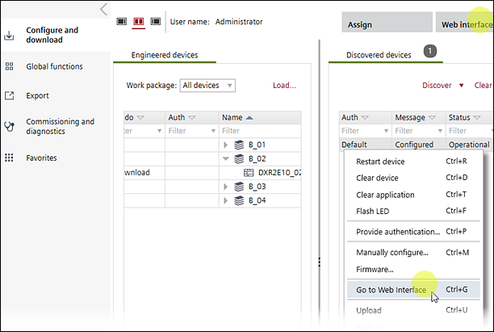

Connecting to the web interface of the device
Use this procedure to launch the web interface of a configured device.

Connect to the web interface
- The network interface card on the laptop is configured.
Configuring a network connection - The LAN cable from the commissioning laptop is connected to the network or USB cable is directly connected to the device.
Connection types and network card settings - If connected through the room unit, wait for the device to restart after a download (15 to 30 seconds).
- Select Startup > Configure and download.
- Select a discovered device in the Discovered devices tab.
- Right-click and select Go to web interface.
- Enter your login credentials if prompted.
Web interface
- The web interface of the device displays.